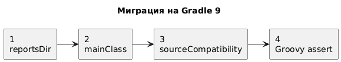
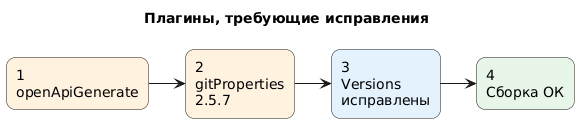
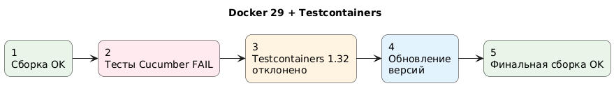
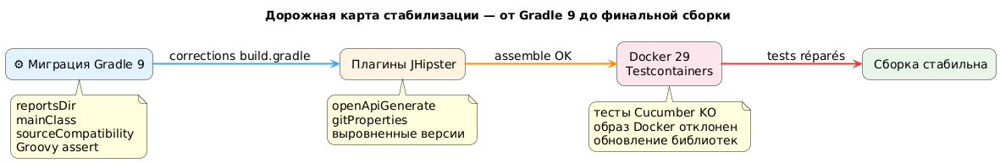
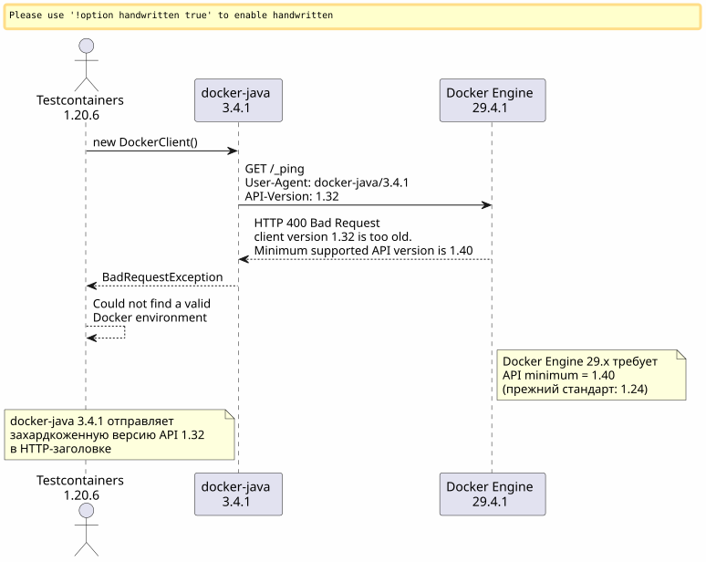
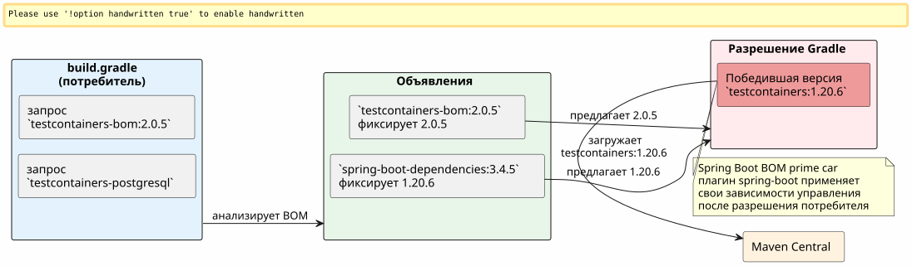
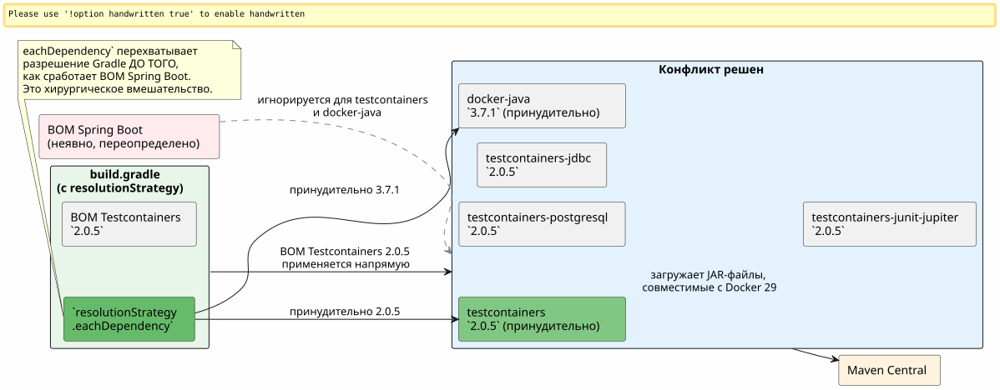

Когда Gradle 9, Docker 29 и Testcontainers окончательно поссорились: отладка сборки JHipster
Опубликовано 25 April 2026
- Сцена: проект JHipster, сборка, которая больше не загружается
- Ошибка 1 : переменная-призрак `reportsDir
- Ошибка 2:
main = "…"больше не существует в Gradle 9 - Ошибка 3:
sourceCompatibilityбольше не является свойством проекта - Ошибка 4: трехоперандное утверждение Groovy
- Ошибка 5: неявная зависимость
compileKotlin→ `openApiGenerate - Ошибка 6 :
generateGitPropertiesломается при `FilterOutputStream.write() - Наконец: Testcontainers вступает в игру
- Этап 1: путь docker-java
- Фаза 2: веб-поиск и хлебные крошки GitHub
- Фаза 3: ловушка переименованных артефактов
- Этап 4 : принудительно разрешить
- Итоговый результат
- Сводная таблица исправлений
- Вывод
Вы уже знали этот момент, когда простой`./gradlew build`который вы запускаете сто раз в день, вдруг начинает падать из-за ранее невиданной ошибки? Умножьте это одиннадцать раз подряд, добавьте хорошую дозу несовместимости Docker Engine 29, посыпьте Gradle 9, который убивает API, которых вы использовали десять лет. Вот полный журнал.
Цель: показать ряд несовместимостей.

Цель: изолировать сломанные плагины.

Цель: проблема выполнения.


Сцена: проект JHipster, сборка, которая больше не загружается
Проект`edster`это приложение JHipster, сгенерированное в 2024 году. Корневой скрипт сборки`build.gradle`Он оставался стабильным в течение месяцев. Затем решили обновить до версии:
Компонент |
Целевая версия |
Gradle |
9.4.1 |
Джава |
21.0.11-tem (Eclipse Temurin) |
JHipster |
8.x (фреймворк`tech.jhipster:jhipster-framework:8.11.0`) |
Spring Boot |
3.4.5 |
Котлин |
2.3.0 |
Движок Docker |
29.4.1 (API 1.54) |
Изменение версии Java выполняется через SDKMAN :
sdk use java 21.0.11-temПервый запуск :
$ ./gradlew build --no-daemon
FAILURE: Build failed with an exception.
* Where:
Build file '/home/.../edster/build.gradle' line: 18
* What went wrong:
An exception occurred applying plugin request [id: 'jhipster.cucumber-conventions']
> Failed to apply plugin 'jhipster.cucumber-conventions'.
> Could not create task ':cucumberTest'.
> Could not create task ':consoleLauncherTest'.
> Could not set unknown property 'reportsDir' for task ':consoleLauncherTest'Мы даже не начинаем загрузку скрипта сборки. Проблема в`buildSrc/src/main/groovy/jhipster.cucumber-conventions.gradle`.
Ошибка 1 : переменная-призрак `reportsDir
Скрипт`jhipster.cucumber-conventions.gradle`содержит:
tasks.register('consoleLauncherTest', JavaExec) {
dependsOn(testClasses)
String cucumberReportsDir = file("$buildDir/reports/tests")
outputs.dir(reportsDir) // <-- reportsDir n'existe PAS
classpath = sourceSets["test"].runtimeClasspath
main = "org.junit.platform.console.ConsoleLauncher"
// ...
}Определённая переменная — это`cucumberReportsDir`. Это используется`reportsDir`-- которая не определена нигде.
Исправление:`outputs.dir(cucumberReportsDir)`
Ошибка 2: main = "…" больше не существует в Gradle 9
Срочный перезапуск:
Could not set unknown property 'main' for task ':consoleLauncherTest' of type org.gradle.api.tasks.JavaExec.Gradle 9 удаляет свойство`main`в пользу`mainClass`о задачах`JavaExec`.
Исправление : mainClass = "org.junit.platform.console.ConsoleLauncher"
Ошибка 3: sourceCompatibility больше не является свойством проекта
Новая ошибка:
Could not set unknown property 'sourceCompatibility' for root project 'edster' of type org.gradle.api.Project.Корневой скрипт имел:
sourceCompatibility=17
targetCompatibility=17Gradle 9 удаляет эти свойства на уровне корня. Они должны находиться в блоке`java`.
Коррекция:
java {
sourceCompatibility = JavaVersion.VERSION_21
targetCompatibility = JavaVersion.VERSION_21
}Ошибка 4: трехоперандное утверждение Groovy
В старом скрипте содержалось:
assert System.properties["java.specification.version"] == "17" || "21" || "24"В Groovy,"21" et "24"`являются strings truthy. Выражение разрешается в(… == "17") || true || true`, что всегда истинно — но синтаксис неверен для желаемого строгого утверждения.
Исправление:
assert System.properties["java.specification.version"] in ["17", "21", "23", "24"]Ошибка 5: неявная зависимость compileKotlin → `openApiGenerate
Сборка продолжается. Компиляция Kotlin прошла успешно. Затем :
Task ':compileKotlin' uses this output of task ':openApiGenerate'
without declaring an explicit or implicit dependency.Gradle 9 отклоняет неявные зависимости между задачами. Поскольку`compileKotlin`читает сгенерированные источники`openApiGenerate`, нужно объявить ссылку.
Коррекцияв`build.gradle` :
afterEvaluate {
tasks.named("compileKotlin").configure {
dependsOn(tasks.named("openApiGenerate"))
}
}Le `afterEvaluate`необходимо потому что`openApiGenerate`Это расширение (плагин OpenAPI Generator), а не задача, непосредственно доступная во время фазы конфигурации.
Ошибка 6 : generateGitProperties ломается при `FilterOutputStream.write()
Компиляция Java проходит. Ресурсы обработаны. Затем:
> Task :generateGitProperties FAILED
No signature of method: java.io.FilterOutputStream.write() is applicable for argument types: (Integer) values: [103]Плагин`gradle-git-properties`версия 2.5.0 несовместима с Java 21 / Gradle 9. Внутренняя ошибка пытается вызвать`write(int)`через Groovy на потоке, который он закрыл.
Исправлениев`gradle.properties`:
gitPropertiesPluginVersion=2.5.7Наконец: Testcontainers вступает в игру
До этого это была чистая отладка скриптов сборки. Каждая ошибка была несовместимостью Gradle 9 или Java 21 в скриптах сборки. После шести исправлений, указанных выше, это`./gradlew assemble`проходит успешно.
Но`./gradlew build`Он также запускает тесты, а тесты Cucumber используют Testcontainers для запуска временного PostgreSQL.
Could not find a valid Docker environment.
EnvironmentAndSystemPropertyClientProviderStrategy: failed with exception BadRequestException
(Status 400: {"message":"client version 1.32 is too old. Minimum supported API version is 1.40"}
UnixSocketClientProviderStrategy: failed with exception BadRequestException
(Status 400: {"message":"client version 1.32 is too old. Minimum supported API version is 1.40"}Testcontainers не может взаимодействовать с Docker. Две разные стратегии (переменные окружения + сокет Unix) терпят неудачу из-за одной и той же ошибки.

Этап 1: путь docker-java
Первый рефлекс: клиент Docker Java, используемый Testcontainers, отправляет версию API`1.32`в его HTTP-handshake, но Docker Engine 29.4.1 требует минимум`1.40`. Проблема находится на уровне клиента, а не демона.
Проверка версии docker-java, решённая Testcontainers 1.20.6 :
$ ./gradlew dependencies --configuration testRuntimeClasspath | grep docker-java
+--- com.github.docker-java:docker-java-api:3.4.1
+--- com.github.docker-java:docker-java-transport:3.4.1docker-java 3.4.1, датированный Testcontainers 1.20.6. Последняя публичная версия docker-java — 3.5.1. Попытаемся принудительно повысить версию через`resolutionStrategy`в блоке`configurations` de build.gradle :
configurations {
all {
resolutionStrategy.eachDependency { details ->
if (details.requested.group == "com.github.docker-java"
&& details.requested.name.startsWith("docker-java")) {
details.useVersion("3.5.1")
}
}
}
}Перезапуск сборки. Та же ошибка:`client version 1.32 is too old`.
Проверка кэша Gradle: JAR‑файлы успешно перезагружены, но ошибка сохраняется. docker-java 3.5.1 по-прежнему отправляет`1.32`. Эта версия поэтому НЕ достаточна для Docker Engine 29.4.1.
действие очищения: очистить полностью кэш Gradle, просто чтобы быть уверенным :
rm -rf ~/.gradle/caches
rm -rf /path/to/project/.gradleПолный перезапуск после очистки. Та же ошибка.
Фаза 2: веб-поиск и хлебные крошки GitHub
docker-java 3.5.1 недостаточен. Осталось только поискать, есть ли кто-то, кто столкнулся с этой проблемой.
Целевой поиск по проблемам testcontainers-java и docker-java :
site:github.com/testcontainers "client version 1.32 is too old"
site:github.com/docker-java "client version 1.32" Docker Engine 29Первые немедленные результаты :
-
testcontainers-java#11210—
[Bug]: client version 1.32 is too old. Minimum supported API version is 1.44 -
testcontainers-java#11212—
[Bug]: Docker 29.0.0 could not find a valid Docker environment -
testcontainers-java#11491—
[Bug]: Incompatibility in Ubuntu Github runners with Docker Engine 29.1.*
Нить Ариадны ясна: Docker Engine 29.x повысил свою минимальную версию API до`1.24`(старый дефект) к`1.40`. Testcontainers 1.20.x использует docker-java 3.4.x, который согласовывает версию API, отправляя`1.32`. Демон вежливо, но твердо отказывает.
В проблеме #11491 maintainer отвечает:
_ Привет, у меня запущен проект с версией 2.0.3 на GH runner с движком 29.1, и он работает. Пожалуйста, проверьте, нет ли конфликта версий? Пожалуйста, запомните, что все модули были префиксированы с`testcontainers-. Итак, начиная с версии 2.x мы перешли от`postgresql to testcontainers-postgresql _
Этот ответ содержитдве критические сведения :
-
Testcontainers 2.0.3+ решает проблему
-
Модули былипереименованные с префиксом `testcontainers-
Фаза 3: ловушка переименованных артефактов
Переименование жестоко. В Testcontainers 2.x ни одно из старых имён не работает под этим именем:
Старое название (1.x) |
Новое имя (2.x) |
|
|
|
|
|
|
|
неизменный |
Первая попытка: применить BOM Testcontainers 2.0.5 и новые названия артефактов в`build.gradle`.
dependencies {
testImplementation platform("org.testcontainers:testcontainers-bom:2.0.5")
testImplementation "org.testcontainers:testcontainers-postgresql"
testImplementation "org.testcontainers:testcontainers-jdbc"
testImplementation "org.testcontainers:testcontainers-junit-jupiter"
testImplementation "org.testcontainers:testcontainers"
}./gradlew build
FAILURE: Could not find org.testcontainers:jdbc:2.0.5.
Could not find org.testcontainers:junit-jupiter:2.0.5.BOM testcontainers-bom недостаточно.Почему? Потому что Spring Boot 3.4.5 предоставляет свой собственный BOM управления зависимостями (spring-boot-dependencies) которыйвыиграйВ транзитивном разрешении BOM Testcontainers. Spring Boot устанавливает`testcontainers` à 1.20.6, и поэтому все артефакты, которые не указаны явно в BOM Spring Boot (как новые`testcontainers-*) резолвят к старым именам`1.20.6-- которые больше не существуют в этой версии.
При осмотре`dependencies --configuration testRuntimeClasspath`, имеется:
+--- org.testcontainers:testcontainers -> 1.20.6 (*)
| \--- org.testcontainers:testcontainers:2.0.5 -> 1.20.6Le →`указывает на замену: Testcontainers 2.0.5 требуется, но Spring Boot принуждает`1.20.6.

Этап 4 : принудительно разрешить
Стратегия становится двойной:
-
Принудительно установить docker-java в версию 3.7.1 (протестирована как совместимая с Docker Engine 29)
-
Принудительно установить Testcontainers core версии 2.0.5, обходя BOM Spring Boot

Финальная правкав`build.gradle` :
configurations {
all {
resolutionStrategy.eachDependency { details ->
if (details.requested.group == "com.github.docker-java"
&& details.requested.name.startsWith("docker-java")) {
details.useVersion("3.7.1")
}
if (details.requested.group == "org.testcontainers"
&& details.requested.name == "testcontainers") {
details.useVersion("2.0.5")
}
}
}
}
dependencies {
testImplementation platform("org.testcontainers:testcontainers-bom:2.0.5")
testImplementation "org.testcontainers:testcontainers-jdbc"
testImplementation "org.testcontainers:testcontainers-junit-jupiter"
testImplementation "org.testcontainers:testcontainers-postgresql"
testImplementation "org.testcontainers:testcontainers"
// ... autres dépendances Spring Boot
}Le `resolutionStrategy.eachDependency`является единственным способом обойти BOM`spring-boot-dependencies`управляемый плагином Spring Boot. Тест равенства на`details.requested.name == "testcontainers"`является намеренно ограничивающим: мы заставляем только основной модуль. Модули`testcontainers-*`следуют BOM Testcontainers 2.0.5, который мы явно объявили.
Итоговый результат
$ ./gradlew build --no-daemon
> Task :consoleLauncherTest
[2 containers found]
[2 containers started]
[2 containers successful]
BUILD SUCCESSFUL in 1m 16sTestcontainers 2.0.5 + docker-java 3.7.1 наконец смогли создать свои контейнеры PostgreSQL через Docker Engine 29.4.1. Последняя бизнес‑ошибка (HTTP 500 в тесте Cucumber) — это полностью независимая от скрипта сборки проблема приложения.
Сводная таблица исправлений
| # | Файл | проблема | Исправление |
|---|---|---|---|
1 |
|
Переменная`reportsDir`несуществующая |
|
2 |
|
`main`устаревший Gradle 9 |
|
3 |
|
`sourceCompatibility`top-level запрещено Gradle 9 |
Блок`java { sourceCompatibility = JavaVersion.VERSION_21 }` |
4 |
|
Неправильное утверждение Groovy |
|
5 |
|
Неявная зависимость`compileKotlin`→ |
|
6 |
|
`gitPropertiesPluginVersion`Несовместимый Java 21 |
|
7 |
Кеш Gradle |
docker-java 3.5.1 протестировано, решено, но недостаточно |
Очистка + проход docker-java 3.7.1 |
8 |
|
Testcontainers 1.20.6 не совместим с Docker Engine 29 |
Принуждение Testcontainers 2.0.5 + префикс`testcontainers-*`+ resolutionStrategy против Spring Boot BOM |
Вывод
Если ваша сборка JHipster/Gradle падает после обновления до Gradle 9 + Docker Engine 29, ошибки делятся на две категории :
Ошибки скрипта сборки(первые 6) : Gradle 9 удаляет свойства и синтаксисы, которые работали годами (sourceCompatibility=, main =, reportsDir). Это механические миграции, когда мы знаем новую API.
Ошибки времени выполнения Docker(последние 2) : Docker Engine 29.4.1 исключает клиенты API < 1.40. Testcontainers 1.20.6 (навязанный Spring Boot 3.4.5) использует docker-java 3.4.1, который отправляет 1.32. Только Testcontainers 2.0.5 + docker-java 3.7.1 решает проблему, с переименованием артефактов и принудительным указанием версии via`resolutionStrategy.eachDependency`как единственный способ обойти неявный BOM Spring Boot.
Скрипт сборки Gradle в корне проекта теперь чистый.`./gradlew build`переходит на Java 21, Gradle 9.4.1, Spring Boot 3.4.5 и Docker Engine 29.4.1.